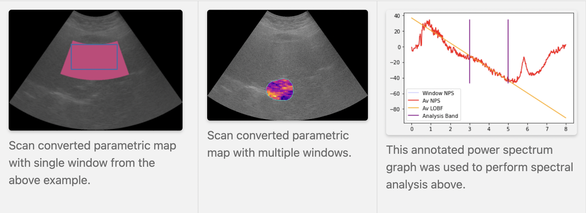

2D QUS CLI Example
Overview
This tutorial is a sample walkthrough of QUS parameterization of scan converted IQ data from a Canon system. For reference, the sample data used in this example can be found here.
Note some aspects of this example require some interaction with the QUS GUI, so we recommend some familiarity before completing this tutorial.
Getting Started
First, assuming we start from the root of the QuantUS repository using an activate Python environment for QuantUS, we can start by importing relevant packages.
import os
import pickle
from pathlib import Path
from pyQus.spectral import SpectralAnalysis
from pyQus.analysisObjects import UltrasoundImage
from src.Parsers.canonBinParser import findPreset, getImage
Parse Image & Phantom
Next, we can select and parse both the image and phantom IQ data to run our analysis on. Note the image and phantom must be taken with the same transducer with identical settings to ensure correctness and the ability to compare results to those taken from other systems.
imagePath = Path("/PATH/TO/ATI-Data-CanonFatStudy/001/Preset_2/20220427104128_IQ.bin")
phantomPath = Path("/PATH/TO/ATI-Data-CanonFatStudy/Phantom data/Preset_2/20220831121752_IQ.bin")
# Ensure the image and phantom share a transducer preset
imPreset = findPreset(imagePath)
phantomPreset = findPreset(phantomPath)
assert imPreset == phantomPreset'
# Parse image and phantom
imgDataStruct, imgInfoStruct, refDataStruct, refInfoStuct = getImage(
f"{imagePath.name}", f"{imagePath.parent}", f"{phantomPath.name}", f"{phantomPath.parent}"
)
Region of Interest Selection
Here, we choose a predetermined region of interest (ROI) to run our QUS parameterization on. This ROI can most easily be generated using our GUI.
# Load ROI file
pkl_name = Path("/PATH/TO/ATI-Data-CanonFatStudy/Phantom data/Preset_2/roi.pkl")
with open(pkl_name, "rb") as f:
roi_info = pickle.load(f)
# Ensure ROI is for correct image and phantom combination
assert roi_info["Image Name"] == imagePath.name
assert roi_info["Phantom Name"] == phantomPath.name
# Retrive ROI boundary info
sc_spline_x = roi_info["Spline X"]
sc_spline_y = roi_info["Spline Y"]
Analysis Parameters for QUS Parameterization
Again, we can choose a predetermined set of analysis parameters used for our QUS parameterization including spectral analysis. This can be loaded here in a similar fashion to how the ROI was loaded.
# Load Analysis Config file
pkl_name = Path("/PATH/TO/ATI-Data-CanonFatStudy/Phantom data/Preset_2/analysis_config.pkl")
with open(pkl_name, "rb") as f:
config_info = pickle.load(f)
# OPTIONAL: Ensure Analysis Config is for correct image and phantom combination
assert config_info["Image Name"] == imagePath.name
assert config_info["Phantom Name"] == phantomPath.name
config = config_info["Config"]
Alternatively, we can specifify a custom analysis configuration from the CLI directly as follows. Note the hardcoded values are for illustrative purposes only. The appropriate values of these will vary greatly by experiment goals and system configuration.
from pyQus.analysisObjects import Config
config = Config()
config.transducerFreqBand = [0, 8000000] # [min, max] (Hz)
config.analysisFreqLand = [3000000, 5000000] # [lower, upper] (Hz)
config.samplingFrequency = 53330000 # Hz
config.axWinSize = 50 # axial length per window (mm)
config.latWinSize = 90 # lateral length per window (mm)
config.windowThresh = 0.5 # % of window area required to be considered in ROI
config.axialOverlap = 0 # % of window overlap in axial direction
config.lateralOverlap = 0 # % of window overlap in lateral direction
config.centerFrequency = 4000000 # Hz
QUS Parameterization
Next, we prepare for and complete QUS parametrization primarly using spectral analysis. Our preparation includes more metadata assignments as follows:
ultrasoundImage = UltrasoundImage()
ultrasoundImage.axialResRf = imgInfoStruct.depth / imgDataStruct.rf.shape[0]
ultrasoundImage.lateralResRf = ultrasoundImage.axialResRf * (
imgDataStruct.rf.shape[0]/imgDataStruct.rf.shape[1]
) # placeholder
ultrasoundImage.bmode = imgDataStruct.bMode
ultrasoundImage.phantomRf = refDataStruct.rf
ultrasoundImage.rf = imgDataStruct.rf
ultrasoundImage.scBmode = imgDataStruct.scBmode
ultrasoundImage.xmap = imgDataStruct.scBmodeStruct.xmap # scan-converted attribute only
ultrasoundImage.ymap = imgDataStruct.scBmodeStruct.ymap # scan-converted attribute only
Finally, we can begin using the analysis pipeline of this CLI. Note all analysis is completed on non-scan converted RF data. Scan conversion will be reconciled in the following Post-Processing section.
spectralAnalysis = SpectralAnalysis()
spectralAnalysis.ultrasoundImage = ultrasoundImage
spectralAnalysis.config = config
spectralAnalysis.initAnalysisConfig()
spectralAnalysis.scSplineX = scSplineX
spectralAnalysis.scSplineY = scSplineY
spectralAnalysis.splineToPreSc()
spectralAnalysis.generateRoiWindows()
spectralAnalysis.computeSpecWindows()
Post-Processing
Since the data in this example is scan converted, we have an extra step to re-scan convert our analyzed data in order to have each window occupy the correct location of our image.
from src.DataLayer.dataObjects import ScConfig
# This will support scan conversion transformations
scConfig = ScConfig()
scConfig.width = imgInfoStruct.width1
scConfig.tilt = imgInfoStruct.tilt1
scConfig.startDepth = imgInfoStruct.startDepth1
scConfig.endDepth = imgInfoStruct.endDepth1
From here, we can display our results in the form of a parametric map on our initial image. As specified in the Analysis Parameters for QUS Parameterization section of this page, we choose a large enough axial and lateral window size with a small enough window threshold such that this analysis only creates a large single window instead of a detailed parametric map.
from src.DataLayer.spectral import SpectralData
spectralData = SpectralData()
spectralData.spectralAnalysis = spectralAnalysis
spectralData.scConfig = scConfig
# Prepare scan converted parametric maps
spectralData.convertImagesToRGB()
spectralData.drawCmaps()
spectralData.scanConvertCmaps()
# Plot power spectrum used to compute spectral parameters
spectralData.plotPsData()
# Show scan converted parametric map and ROI
import matplotlib.pyplot as plotPsData
plt.imshow(spectralData.scSiIm)
plt.plot(spectralData.splineX, spectralData.splineY)
Examples of sample outputted visualizations from this pipeline are below.
{kind=link}
